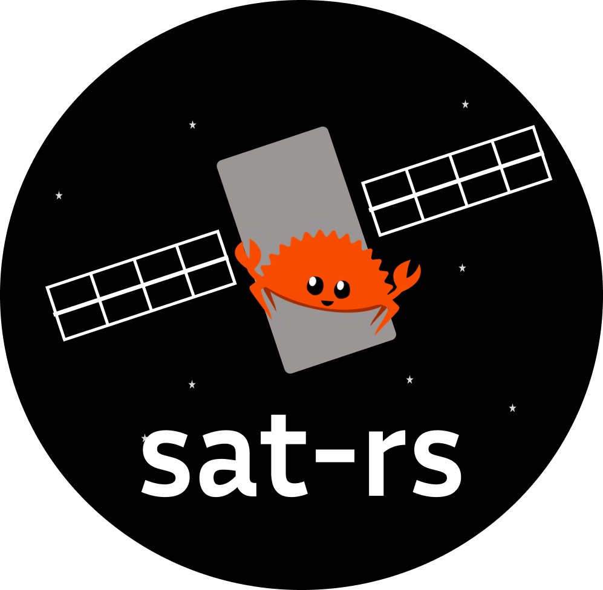

sat-rs is a framework with the primary goal to provide re-usable components to write on-board software for remote systems like rovers or satellites. It is specifically written for the special requirements for these systems. A lot of the architecture and general design considerations are based on the FSFW C++ framework which has flight heritage through the 2 missions FLP and EIVE.